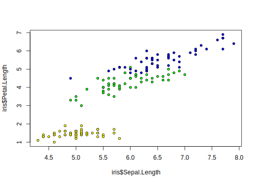

5.1 Dispositivos Gráficos
Existem dois principais tipos de dispositivos (Devices) gráficos no R que basicamente significam onde você imprimirá um gráfico ou figura. Isso pode ocorrer:
Na tela do computador (monitor), ou seja, em janelas do R ou do RStudio onde você visualiza gráficos;
Em um arquivo em formato
.pdf,.jpeg,.tiff,.png,.epsetc.
5.1.1 Função plot()
A função plot() (ou plot.default()) é a principal função genérica para gerar gráficos no R.
Veremos isso com mais detalhes na seção Funções gráficas de alto nível.
Aqui demonstraremos o uso da função simplificadamente para facilitar as demais explicações.
Entenda que geramos gráficos com essa função.
Vamos a um exemplo muito simples:
# o objeto R do iris como exemplo
str(iris)## 'data.frame': 150 obs. of 5 variables:
## $ Sepal.Length: num 5.1 4.9 4.7 4.6 5 5.4 4.6 5 4.4 4.9 ...
## $ Sepal.Width : num 3.5 3 3.2 3.1 3.6 3.9 3.4 3.4 2.9 3.1 ...
## $ Petal.Length: num 1.4 1.4 1.3 1.5 1.4 1.7 1.4 1.5 1.4 1.5 ...
## $ Petal.Width : num 0.2 0.2 0.2 0.2 0.2 0.4 0.3 0.2 0.2 0.1 ...
## $ Species : Factor w/ 3 levels "setosa","versicolor",..: 1 1 1 1 1 1 1 1 1 1 ...# plotando comprimento de sépala vs. comprimento de pétalas e colorindo os pontos de acordo com as espécies
vcl <- c("yellow", "green", "blue")[as.numeric(iris$Species)] # cria um vetor de cores para cada linha em Iris segundo especie
# plota a figura
plot(iris$Sepal.Length, iris$Petal.Length, type = "p", pch = 21, bg = vcl, cex = 0.8)
Muitos argumentos da função plot() são parâmetros gráficos (Seções 5.2 e 5.3).
5.1.2 Dispositivos de Tela
Quando você usa funções para gerar um gráfico, o R ou RStudio usa automaticamente um dispositivo de tela. No entanto, você pode abrir novas janelas com as seguintes funções:
X11()oux11()funcionam no Mac, Linux e Windows;quartz()funciona apenas no Mac;windows()funciona apenas no Windows.
?device # veja o help da função e as opções de devices
X11() # irá abrir uma janela nova
# vamos plotar o mesmo gráfico do exercício anterior
vcl <- c("yellow", "green", "blue")[as.numeric(iris$Species)] # cria um vetor de cores para cada linha em Iris segundo especie
# plota a figura
plot(iris$Sepal.Length, iris$Petal.Length, type = "p", pch = 21, bg = vcl, cex = 0.8)
# irá fechar essa nova janela
dev.off()
quartz() # num mac abre uma janela sem dar nenhum aviso (funciona melhor que X11() no Mac)
vcl <- c("yellow", "green", "blue")[as.numeric(iris$Species)] # cria um vetor de cores para cada linha em Iris segundo especie
# plota a figura
plot(iris$Sepal.Length, iris$Petal.Length, type = "p", pch = 21, bg = vcl, cex = 0.8)
dev.off() # fecha5.1.3 Listar e controlar dispositivos
Existem funções que permitem trabalhar com vários dispositivos ao mesmo tempo, controlando o uso dos dispositivos abertos. Pode haver, por exemplo, várias janelas diferentes mostrando gráficos diferentes durante um trabalho. As principais funções para trabalhar com dispositivos são:
A função
dev.list()lista todos os dispositivos abertos no momento (geralmente o dispositivo padrão, que é sempre o número 1, é ignorado na lista), retornando o número (ordem de abertura) e o nome de cada um;dev.cur()mostra qual o dispositivo que está ativo (em inglês, current). Se há vários abertos, haverá sempre um que estará ativo naquele momento e se você enviar uma figura, ela sairá neste dispositivo;dev.set()torna ativo um determinado dispositivo;dev.off()fecha o dispositivo atual ou vários. Esta é a função dessa lista que é a mais usada na prática.
# vamos primeiro fechar todos os dispositivos
dev.off(which = dev.list())
dev.list() # vai retornar NULL por não há dispositivos abertos
# vamos abrir vários dispositivos
X11() # primeira janela extra
X11() # segunda janela e mesma figura com cores diferentes
X11() # terceira janela e mesma figura com cores diferentes
# coloque e redimensione as janelas para ter as tres visiveis na tua tela e volte aqui.
# veja os dispositivos abertos
dev.list()
# qual o atual
dev.cur() # o ultimo que abrimos, né
dev.set(2)
# vamos mudar para o segundo e plotar algo
plot(iris$Sepal.Length, iris$Petal.Length, type = "p", cex = 0.8)
# vamos mudar para o terceiro e plotar outra coisa
dev.set(3)
dev.cur() # deve responder 3
vcl <- c("yellow", "green", "blue")[as.numeric(iris$Species)]
plot(iris$Sepal.Length, iris$Petal.Length, type = "p", pch = 21, bg = vcl, cex = 0.8)
# vamos mudar para o quarto e plotar a mesma coisa com outras cores
dev.set(4)
dev.cur() # deve responder 4
vcl <- c("red", "blue", "white")[as.numeric(iris$Species)]
plot(iris$Sepal.Length, iris$Petal.Length, type = "p", pch = 21, bg = vcl, cex = 0.8)
# vamos fechar o dispositivo atual
dev.cur()
dev.off()
dev.cur() # mudou automaticamente porque voce fechou o 4
dev.off() # mesma coisa fechou o ativo
dev.cur() # sobrou o 3
# fechar este também
dev.off()
dev.list() # nao tem mais nenhum aberto5.1.4 Dispositivos de arquivos
Há vários dispositivos para gerar arquivos com imagens.
As funções em geral têm o nome do tipo de arquivo gerado.
Vamos ver dois exemplos apenas, mas a mesma lógica se aplica a qualquer um dos dispositivos listados no ? dos dispositivos (execute o comando help('device') e veja a explicação sobre os dispositivos (devices)).
Essas funções são ótimas ferramentas para incluir nos seus scripts visando a produção de figuras para uma publicação. Procure na revista em que você deseja publicar seu artigo as especificações técnicas das figuras. Em seguida, cheque os parâmetros das funções gráficas (Seções 5.2 e 5.3) para você ser capaz de gerar figuras na especificação exata da revista selecionada.
5.1.5 Figuras vetoriais em pdf ou postscript
Em nossa opinião, as funções pdf() e postscript() são as mais importantes para a geração de figuras, porque elas geram arquivos de excelente qualidade por serem vetoriais.
Não há a necessidade de se definir a resolução, porque nesse tipo de imagem isso não existe.
# plotando a figura na tela é o que fazemos normalmente
vcl <- c("yellow", "green", "blue")[as.numeric(iris$Species)]
plot(iris$Sepal.Length, iris$Petal.Length, type = "p", pch = 21, bg = vcl, cex = 0.8)
# salvando a figura num PDF
?pdf # veja o help dessa função e seus argumentos, especialmente width e height
# abre o dispositivo para pdf
pdf(file = "meupdf.pdf", width = lcm(15), height = lcm(10))
# lcm() apenas pega valores em cm e converte em polegadas que é a especificação padrão da funcao pdf. Portanto largura e altura de cada página do PDF é definida por esses argumentos
# plota a figura
plot(iris$Sepal.Length, iris$Petal.Length, type = "p", pch = 21, bg = vcl, cex = 0.8)
dev.off() # fecha o pdf
# só será possível ver o pdf se tiver fechado ele.
getwd() # o pdf foi gerado nessa pasta
# se voce incluir vários gráficos. O pdf irá gerar várias páginas ao mesmo tempo.
# abre o dispositivo para pdf
pdf(file = "meupdf2.pdf", paper = "a4")
# tamanho papel A4
# plota a figura 10 vezes
for (i in 1:10) {
plot(iris$Sepal.Length, iris$Petal.Length, type = "p", pch = 21, bg = vcl, cex = 0.8)
}
dev.off() # fecha o pdf
# veja que o arquivo 2 tem várias páginas5.1.6 Figuras raster
As funções jpeg(), png() e tiff() geram imagens em pixels, cuja qualidade depende muito da definição da resolução.
# formato jpeg sem controlar a resolucao (usando units='px' ou pixel)
# abre o dispositivo no formato desejado
jpeg(filename = "meujpeg.jpg", width = 600, height = 400, units = "px")
# plota alguma coisa
vcl <- c("yellow", "green", "blue")[as.numeric(iris$Species)]
plot(iris$Sepal.Length, iris$Petal.Length, type = "p", pch = 21, bg = vcl, cex = 0.8)
# fecha o jpeg
dev.off()
# ABRA O ARQUIVO E FAÇA UM ZOOM GRANDE
# note que os pixels são super visíveis
# AGORA MELHORANDO A RESOLUCAO
# formato jpeg com 300dpi
# abre o dispositivo no formato desejado
jpeg(filename = "meujpeg2.jpg", width = 15, height = 10, units = "cm", res = 300)
# plota alguma coisa
vcl <- c("yellow", "green", "blue")[as.numeric(iris$Species)]
plot(iris$Sepal.Length, iris$Petal.Length, type = "p", pch = 21, bg = vcl, cex = 0.8)
# fecha o jpeg
dev.off()
DICA: Abra os três arquivos e compare a resolução deles, ampliando a
imagem até visualizar o pixel. Note que em um pdf você
nunca verá o pixel. Por isso, recomendamos que vocÊ trabalhe sempre com
a função pdf().